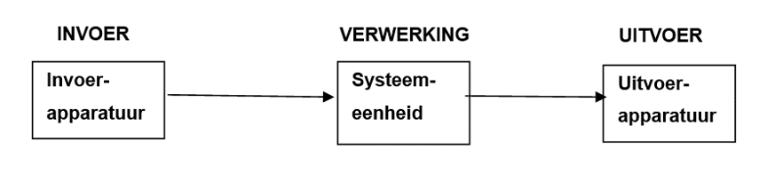

Bij het vak informatica wordt er vaak gesproken over gegevens. Gegevens zijn combinaties van tekens en symbolen die geen betekenis hebben, maar wel betekenis kunnen krijgen. Zodra gegevens een betekenis krijgen en een bepaalde functie innemen wordt er gesproken van informatie. Informatie ontstaat dus wanneer gegevens worden verwerkt en geïnterpreteerd om betekenis te krijgen. Het proces van gegevens omzetten in informatie wordt het gegevensverwerkend proces genoemd. Deze bestaat uit drie fases: invoer, verwerking en uitvoer. Invoer is het proces waarbij gegevens van externe bronnen in een computersysteem worden ingevoerd. Deze ingevoerde gegevens kunnen uit een simpele tekst bestaan, maar het kunnen ook afbeeldingen, geluiden en video's zijn. Het invoeren van gegevens wordt met behulp van invoerapparaten gedaan. Enkele veelvoorkomende invoerapparaten zijn: toetsenborden, muizen, microfoons, camera's, en barcodescanners. Nadat de gegevens zijn ingevoerd, worden ze bewerkt en verwerkt door de computer. Dit proces heet verwerking. Gegevens kunnen overigens ook bewaard worden. Zodra de computer de gegevens heeft verwerkt, worden de resultaten weergegeven of uitgevoerd met behulp van uitvoerapparaten. Een aantal voorbeelden van uitvoerapparaten zijn: monitors, printers en luidsprekers.
